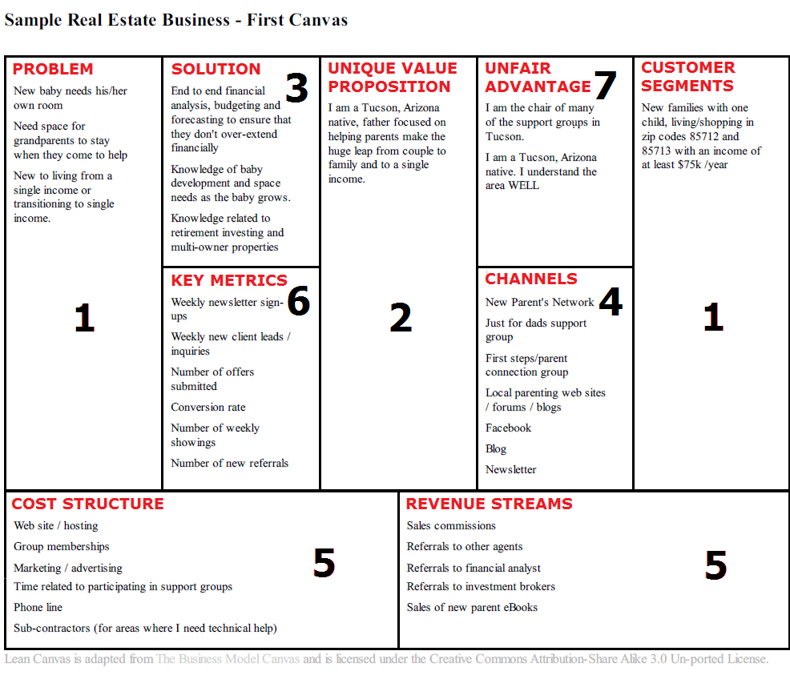
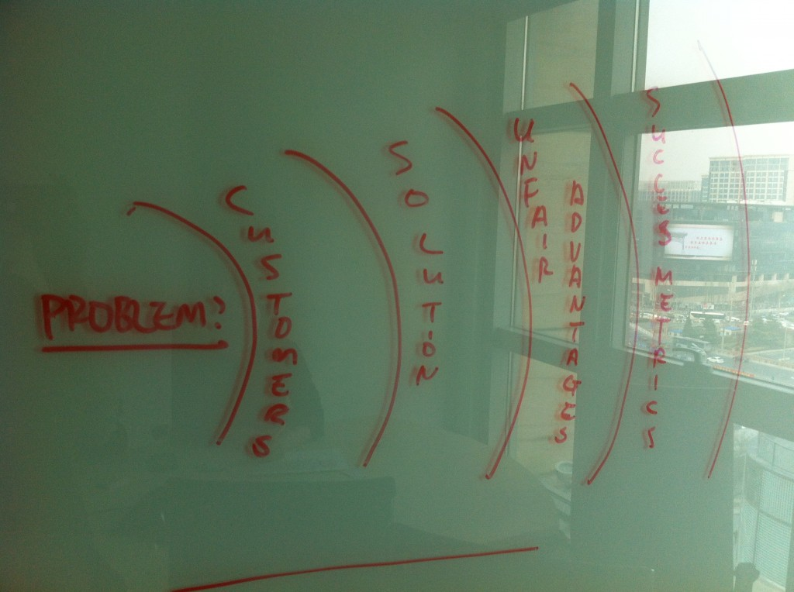
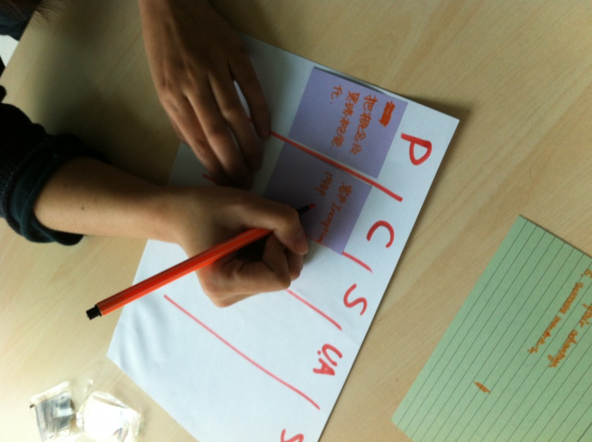
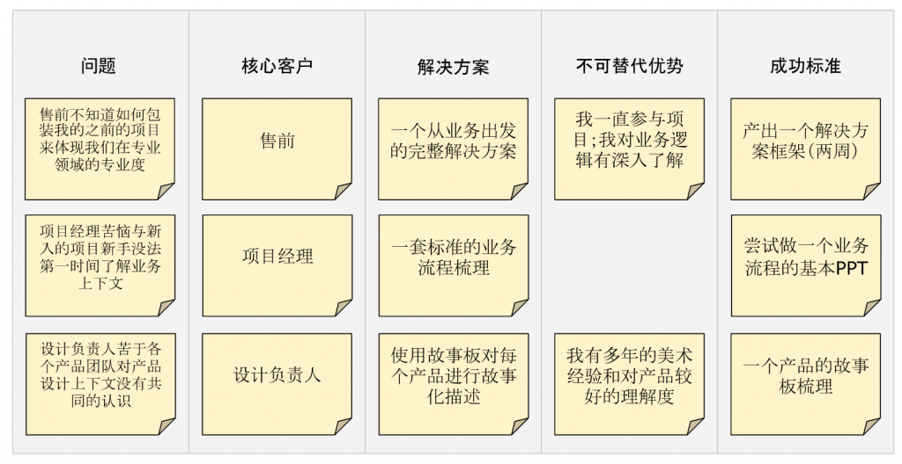

经过大家的努力，我们的体验设计团队从年初的两人扩充到11人，分布在三地，更多新人的加入扩充了我们的能力却也带来了新人个人成长的问题。受到Lean Canvas的启发，我尝试使用面向问题的方式，帮助新人在团队中找到最为合理的成长方向。

从解决方案出发的成长方式
组织内传统的成长模式往往是：我要成为行业专家或者我要成为某某某。包括我自己，在最开始我也是通过跟随ThoughtWorks的资深专家成长起来的。可是，经历了很多创业圈里故事，我越来越发现，这跟创业团队把自己定义成“下一个脸书”或者“乔布斯第二”的错误如出一辙——关注更多的是解决方案而非问题本身。
以成为“行业专家”为例，我们一直在讨论我们应该积累行业经验，鼓励分析人员成为行业专家。如果我们深入讨论“领域知识”就能发现，它是一种解决方案，它尝试解决也许是以下问题：
- 分析师不能很快进入到业务讨论，获得信任；
- 分析师不能在业务上有影响力，缺乏对产品的引导力；
- 售前在销售组织能力时不能展现核心竞争力；
那么作为单个个体时，到底真正发生的是什么问题？组织真正需要解决的又是哪个？解决的办法是否只有一种？
如果尝试解决第一个问题，那么还可能存在以下解决方案：
- 高超的咨询技巧，娴熟的引导技能，让客户高效达成一致，从而获得信任；
- 另一角度对产品进行建言，比如产品设计角度；
- 贴心的客户服务，政治的绝对正确；
从解决方案出发成长方式的最终结果其实跟大多数创业失败的结果类似：
- 没有这个问题；
- 解决了组织（市场）不需要的问题；
- 验证时间太长，无法验证（如何衡量行业专家？），组织（市场）已经变化；
- 用错误的解决方案导致解决失败；
精益创业中总是把对问题的验证放在首位，解决方案永远放在最后。我尝试使用Lean Canvas的模式去梳理从问题出发的成长轨迹。
把自己当作一种服务
在组织内的雇员本身都是一种服务，他提供某种资源帮助组织达到成功，同时从组织获得经济回报，从某种角度来说雇员和组织的关系是服务和客户的关系。
如果把自己当作一种服务，保证组织（客户）持续雇佣（买单）的核心在于个人的价值转化为组织的价值。那么和任何服务或产品创新一样，最核心考虑的是“需求匹配”——雇员是不是能满足组织的需求。
所谓的成长，就是保证自己作为一种服务长期保值。任何服务都存在贬值，这和市场需求度和供给相关，个人作为服务也是一样。特别像ThoughtWorks这样的专业服务公司，服务的贬值速度更甚，这对每位雇员产生了更高的成长要求。
保证自己服务长期保值的方式跟商业上下文中保持业务竞争力如出一辙，无外乎：
- 不断发现新的问题并提供解决方案；
- 和问题的所有者（skateholders）保持好的关系；
- 升华和不断验证自己的解决方案；
- 寻找更多的外部客户；
下面五步是定义自己服务内容的基本步骤：

寻找问题
这是定义服务的基础，作为组织的一员，我能解决组织什么样的问题？所有服务的设计将集中围绕在这个问题周围。
一个留心的人，会积极在组织内发现问题，个人越能够解决这些问题，他在组织内的重要度就越高；个人越能够展示未来能够解决这些问题的潜力，他就能在组织内成为重点培养的对象。
找到问题的所有者作为客户
一个组织问题都必然应对一个组织中的所有者，他也是问题解决后的受益者，这些人通常根据问题的重要程度占据不同的位置，因此把这些人当成你的客户帮助你在组织里更有效的生存。在ThoughtWorks，这些应该是你优先选择的sponsor对象。下图中的新人在纸上写下自己的核心客户：

设计解决方案
当你确定了问题和目标客户之后，在进入解决方案前，尽可能地和客户进行沟通，对问题的真实存在性进行验证，尽可能保证你在解决一个真实存在，且有解决价值的事情。
对于解决方案的设计，尽可能设计一些小的解决方案，而不是用“行业知识”这样大而空的方案，这跟在你漏洞百出的创业方案上加上“O2O”或者“社会化”标签一样的没有意义。
与其说总结“行业知识”不如把解决方案设计成一个：帮助售前总结一个针对特点行业且能体现业务知识的解决方案。因为组织不在乎你是不是能成为“行业专家”，组织在乎的是当外部客户深入理解组织时组织是不是能够体现出“行业优势”。
明确不可替代优势
做不该自己做的事情成为创业失败的主要原因之一，在自己已经有和可能有的优势上做自己能做的事情往往能避免一些不切实际的失败。
总结出你的优势，例如较高的情商、好的仪表、逻辑能力强、有视觉表达能力、英文优秀等等，基于此回过头去看看之前设计的解决方案是不是可行。
另一种方式时和你的内部客户沟通，一起设计出一个面向实质问题的解决方案。
定义成功标准
创业中最长犯的错误是将目标定得过远，对成功的标准定得过高，导致产品长时间不上线，要么偏离用户需求，要么错过最佳的市场时机。
在这里，你需要和你的客户商量一个好的成功定义标准，例如如果你的解决方案是：帮助售前总结一个针对特点行业且能体现业务知识的解决方案。第一个迭代的成功标准可能只是一个脑图。
通过定期对成功标准的检查，保证你的价值环在更短的时间达到闭合，个人对组织的价值得到验证，个人和组织的关系必然长久和稳固，双方得到双赢。
一个个人价值定位的例子
我们选择一位新人的价值定位作为例子，参照这个例子，你也可以在你的组织内写出你自己的价值定位。

就像真正好的产品不是设计出来，或者说一个远大目标并不是产品成功的决定性因素，而更多的是依靠短迭代快速上线，收集反馈不断演进，一个优秀的产品在不知不觉中自然成型；作为组织内的新人也是一样，我们不需要一个远大的目标，而更多的是以解决组织内真实存在的问题出发，不断推出自己的解决方案，让自己作为一种服务模式为组织稳定提供价值。
最后，成长愉快